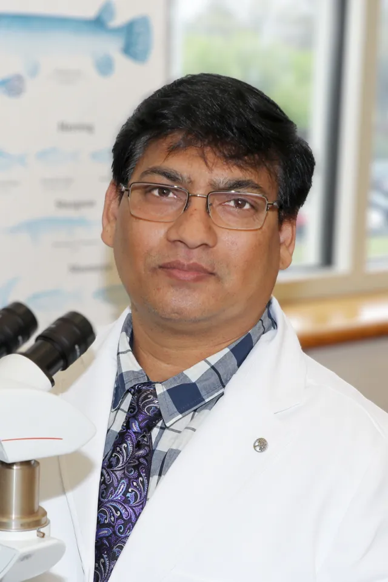
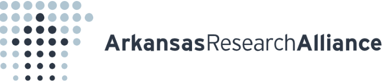

AquaGuard uses an LSTM time-series model trained on real fishpond sensor data to forecast dissolved oxygen ahead of time — automatically triggering aeration and adjusting feed before conditions turn critical.
Enter dissolved-oxygen readings, upload a CSV/XLSX, or pick a sample dataset. AquaGuard will simulate the feed into the live readout, forecast the next 6 hours, and switch the aerator relay when a crash is predicted.
Active species for thresholds: tilapia (critical 5.0 mg/L). Switch the pill above, then Predict again — or switch after a run to re-score the same forecast.
Gray = sensor history. Gold = LSTM’s 6-hour forecast. Crash = a forecasted DO value below the species critical line (caution alone = watch, not crash). Step 4 compares that flag to when DO actually went critical in the file.
Hour-by-hour LSTM forecast (not current DO thresholds). The mg/L range widens the further out the hour — later hours are less certain than the next one.
| Hour | Predicted DO | Risk Level |
|---|
| Start | End | Duration | Min DO | Status |
|---|
| Time | Predicted DO (+6h) | Species Threshold | Status | Action Taken |
|---|---|---|---|---|
| Enter a reading, upload a file, or run a sample simulation below to populate the decision ledger. | ||||
Temperature, pH, and dissolved oxygen readings stream in from pond sensors via MQTT — or are entered manually for a what-if forecast.
An LSTM time-series model predicts DO six hours ahead from the recent reading window (temperature and pH included when available).
Every one of the 6 forecasted hours is checked against species-specific thresholds, backed by published tolerance research.
If a crash is predicted, a relay triggers the aerator and reduces feed automatically — before fish are at risk.
AquaGuard already forecasts a crash six hours out. This is what it takes to connect AquaGuard to a real pond — the hardware that closes the loop, real sensors feeding the model and real relays acting on what it decides.
Feeds the model directly — this is the one reading AquaGuard actually forecasts.
Context only, logged alongside DO but not fed into the model.
Context only, same role as the temperature probe.
Waterproof runs from each probe back to the enclosure.
Reads the probes, publishes readings, and drives the relays.
Mosquitto on a Raspberry Pi — shared across every pond, not a per-pond cost.
Only needed if a pond sits outside the range of existing lab WiFi.
Switches aerator and feeder power from the ESP32's low-voltage signal.
Skip this if the pond already has one — AquaGuard just needs to control it.
A signal line into the existing fish-feeder hardware — coordinate with that project rather than treating it as separate hardware.
Houses the ESP32 and relay board pondside.
Mains-fed where grid power reaches the pond.
Cable glands, junction box, and a mounting float or pole.
Optional — only for a pond with no grid power nearby.

AquaGuard extends the Fish Nutrigenomics & AI Lab's work in AI-driven aquaculture — sitting alongside AquaVision, the lab's morphometric analysis instrument, as a second precision tool built for real pond deployment.
Our mission is to give farmers early warning of dissolved-oxygen crashes hours before they happen, so aeration and feeding decisions can be made automatically — before fish are ever at risk.
